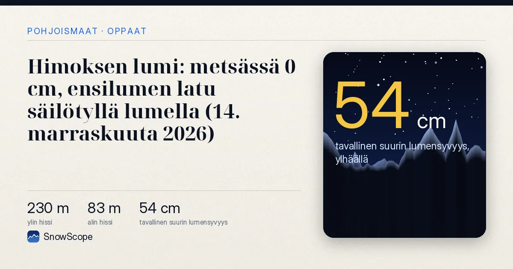

Himoksen lumi: metsässä 0 cm, ensilumen latu säilötyllä lumella (14. marraskuuta 2026)
Etelä-Suomessa ei ole luonnonlunta nimeksikään. Aamulla 13. marraskuuta Himoksen ympäristön sääasemilla mitattiin 0 cm Hallin lentoasemalla (143 m, 26 km:n päässä), 0 cm Jyväskylän Muuratjärvellä ja Joutsassa sekä 2 cm lännempänä Hyytiälässä. Himos avaa silti jotain tänä viikonloppuna: ensilumen ladun 14. marraskuuta, ja se tehdään keskuksen itse valmistelemasta lumesta eikä tämän viikon lumisateesta. Rinteille ei ole vielä avauspäivää.
Katso kohteen Hiihtokeskus Himosvuori lumiennuste reaaliajassa SnowScope-sovelluksessaLumensyvyys, puuterihälytykset ja 3D-kartta, ilmaiseksi.

Latu, ei rinne
Himoksen aukioloaikasivulla kerrotaan, että rinnekauden alku riippuu säästä ja päivä ilmoitetaan, kun se varmistuu. Latu on eri asia: se tehdään valmistellusta lumesta, ja siksi se voi aueta, vaikka ympäröivä metsä on ruskea.
Arviomme mukaan viimeisen seitsemän päivän aikana uutta lunta on tullut noin 2–3 cm, eikä se ole jäänyt maahan.

Tällä viikolla enemmän vettä kuin lunta
Odotamme seuraavien seitsemän päivän aikana noin 2–3 cm lunta. Muut tarkistamamme ennusteet antavat mäen huipulle 4–30 cm, eli vaihteluväli on hyvin laaja, ja ne ovat yhtä mieltä siitä, että yli puolet alaosan sademäärästä tulee vetenä. Lumiraja on noin 220 metrissä, lähes huipun korkeudella (230 m). Odotettavissa on räntää ja vesisadetta, ja lunta vain kylmimpinä tunteina.
Normaali Jämsässä
46 mennyttä talveamme antavat Himokselle tavalliseksi luonnonlumen syvyydeksi 2 cm 14. marraskuuta ja 8 cm 30. marraskuuta; 39 %:na talvista lunta ei ole lainkaan 14. marraskuuta. Alaosan lumipeite kasvaa yleensä vasta joulukuussa, 16 senttiin 15. joulukuuta mennessä. Keskimääräisenä talvena lumensyvyys on suurimmillaan 54 cm.
Lumipäivien määrä on laskenut: ensimmäisten 15 talven keskimääräisenä talvena niitä oli 160, viimeisten 15 talven aikana 139. Viime talvena niitä oli vain 84.
Milloin kannattaa tulla
Rinnelaskettelua varten kannattaa odottaa keskuksen ilmoitusta avauspäivästä. Murtomaahiihtoon juuri nyt ensilumen latu on alueen ainoa todellinen vaihtoehto.
Vinkkejä laskijoille
- Ensilumen ladut ovat lyhyitä: odota kierroksia, älä retkeä.
- Vesisade jäätyneelle maalle tekee parkkipaikoista ja poluista aamuisin hyvin liukkaita.
- Seuraa himos.fi-sivua avauspäivän varalta; se riippuu kylmien öiden sarjasta lumetusta varten.
Lisää karttoja (ulkoiset sivustot)
Lähteet ja tekijät
- Ilmatieteen laitos, avoin data (CC BY 4.0) en.ilmatieteenlaitos.fi/open-data
- Himos, aukioloajat (virallinen), luettu 13.11.2026 himos.fi/aukioloajat/
Näistä luvuista
Mitattu lumi: aamulukemat 13. marraskuuta 2026 Ruotsin (SMHI:n avoin data), Suomen (Ilmatieteen laitoksen avoin data, CC BY 4.0) ja Norjan (MET Norwayn asemaraportit, CC BY 4.0, julkaisija Ogimet) virallisilta sääasemilta. Norjan kansallinen lumikartta seNorge (NVE ja MET Norway, NLOD) antaa rinteille arviot 1 km:n ruudukossa. Avauspäivät: hiihtokeskusten omat sivut, luettu 13.11.2026. Rinteiden pituus ja hissien määrä: OpenSkiMap-kartoitus.
Viralliset lumivyöryennusteet: EAWS – European Avalanche Warning Services
Viittaa tähän raporttiin
Tutkimukseen, opetukseen tai mediaan: luvut ja kaaviot ovat vapaasti käytettävissä CC BY 4.0 -lisenssillä tällä lähdeviitteellä.
SnowScope (2026), Himoksen lumi: metsässä 0 cm, ensilumen latu säilötyllä lumella (14. marraskuuta 2026), https://snowscope.app/blog/fi/2026/11/himos-snow-14-november-2026.html, luettu 2026-11-14
SnowScope (Atlas Labs). (2026, November 14). Himoksen lumi: metsässä 0 cm, ensilumen latu säilötyllä lumella (14. marraskuuta 2026). SnowScope snow reports. https://snowscope.app/blog/fi/2026/11/himos-snow-14-november-2026.html
BibTeX
@misc{snowscope2026himossnow14november2026,
author = {{SnowScope (Atlas Labs)}},
title = {Himoksen lumi: metsässä 0 cm, ensilumen latu säilötyllä lumella (14. marraskuuta 2026)},
year = {2026},
month = nov,
howpublished = {\url{https://snowscope.app/blog/fi/2026/11/himos-snow-14-november-2026.html}},
note = {Published 2026-11-15 09:34 UTC; accessed 2026-11-14}
}· CC BY 4.0 · Menetelmät, data ja työkalut →
Hiihtokeskus Himosvuori: lumi ja lämpötila korkeuden mukaan, tämä talvi ja viime talvi (työkalut) →
Seuraa: Hiihtokeskus Himosvuori
Ilmainen: viesti, kun uutta lunta on tulossa, ja ennuste joka aamu.